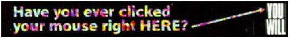
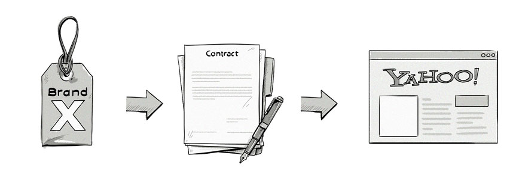
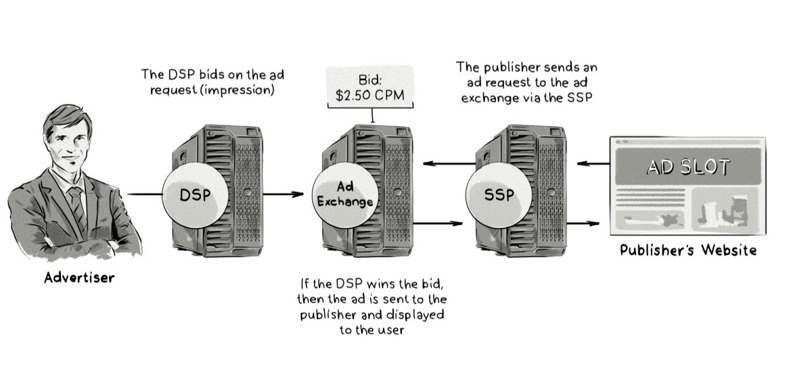

On October 27, 1994, the world of advertising was forever transformed by a small graphic bearing the presumptive words, "Have you ever clicked your mouse right here? You will," in a kitschy rainbow font. The age of banner ads had officially begun.(A Brief History of Online Advertising - HubSpot Blog. )
The Paradigm Shift
The ability to advertise online changed the trajectory of the Advertising Industry forever. With an increasing percentage of the consumer demographics opting to shop online, internet advertising is now a multi-billion dollar industry. (The History of Online Advertising - AdPushup Blog.)
Online ads have matured a lot since those days, from when "surfing the net" meant traversing a minefield of unwelcome pop-up ads? Or when "digital advertising" referred almost exclusively to obnoxious flashing banners and random sidebar ads?
Just as online ads have matured, so has the way we purchase them. At the earlier stages of online advertising buying advertising space on the internet was simple. There was the website and the advertiser, just the two parties trying to buy and sell. Buying Ads Online — Programmatic Advertising and AI. )
Before programmatic media-buying, brands negotiated contracts with publishers in person.
Then we slowly moved to a time when paid advertising had numerous other options — Google Adwords, Bing, Social, Sponsored Content, and so on.(Buying Ads Online — Programmatic Advertising and AI. )
A marketer would have to use their judgement on how to use the advertising budget they had been given, needing to monitor, tweak their budget accordingly carefully. This process of Direct Sales painstakingly manual process that involves hours of human effort to execute.
The rules of the game changed big time as advertising evolved, automation and “machine intelligence” came into play, and the arena of Programmatic Advertising was opened to the advertising world.(Buying Ads Online — Programmatic Advertising and AI. )
What is Programmatic Advertising?
Programmatic advertising helps automate the decision-making process of media buying by targeting specific audiences and demographics. (Programmatic Advertising & Media Buying - Marketing Land. )
Programmatic ads are placed using artificial intelligence (AI) and real-time bidding (RTB) for online display, social media advertising, mobile and video campaigns. (Programmatic Advertising & Media Buying - Marketing Land. )
How does it work?
Once an ad is bought with programmatic advertising then uses the algorithms to evaluate user analytics, on the following basis:
- Behaviour
- Engagement level
- Social engagement
- Location
- Time per visit
- Age
- Sex
- Location
This data helps the system to determine what advertisement content is relevant to a particular user.
For example, a user is scanning some blog related to “travelling to Bali”. The system then evaluates the user and displays an ad related to “offers on flights to Bali” or “hotels to stay in Bali”.
By targeting the ad to a specific user, programmatic advertising can increase the efficiency of an ad campaign accordingly and is displayed as an impression on the page. The aim is to attract the user to click on the ad.
There are two primary types of programmatic advertising; Programmatic Direct, and Real-Time Bidding (RTB).
Real-Time Bidding (RTB)
RTB programmatic advertising is the automated process of buying display ad space in real time, by bidding based on the target audience you wish to reach. (How to get started with Programmatic advertising: A beginners guide)
There are a few components used in RTB:
Ad exchange:
This is where the publisher’s inventory is sold via an auction, and bid on and bought by advertisers. (How to get started with Programmatic advertising: A beginners guide)
SSP (Supply-side platform)
A supply-side platform (often called SSP), is a system which allows publishers to access the ad exchange and list their inventory to be sold in auction. (How to get started with Programmatic advertising: A beginners guide)
DSP (Supply-side platform)
A DSP is a demand-side platform. This is a system which allows advertisers (and agencies) to access the ad exchange auction and bid for ad space. ( (How to get started with Programmatic advertising: A beginners guide)
Using RTB Advertisers get to choose exactly where their ad’s are going to be placed, and publishers benefit from ad targeting that allows for better conversion rates. RTB is just one of the possible programmatic processes in which media can be bought in online advertising, however this process still requires a more manual approach in monitoring, and adjusting the advertisements.
Programmatic Direct
Programmatic Direct (sometimes called Programmatic Guaranteed) on the other hand, is where ad space is still purchased programmatically but is purchased in advance, based on a specific number of required impressions and audiences required. (How to get started with Programmatic advertising: A beginners guide)
So what role does AI play in all of this?
Programmatic uses using machine learning technology to improve efficiency and make better budget decisions for advertisers. ( (How Programmatic Advertising & AI benefit AdWords, Facebook Ads And Advertisers)
Programmatic advertising and AI as so entwine, they’re unlikely to be seen hanging out separately ever again. (How Programmatic Advertising & AI benefit AdWords, Facebook Ads And Advertisers)
The use of AI in the media buying process is evolving rapidly. Brands are now able to serve more relevant, targeted messages in the right place, at the right time, with the right message.
Predictive analytic’s enable companies to target better and efficiently use ad campaigns for their brands on potential consumers. Using highly developed algorithms, AI has the ability to analyse data and think in real time.
It’s important to note that the use of AI in Programmatic Advertising is not taking away a marketers job, though it could easily be assumed it is. Big data has opened up thousands of doors for marketers, who are now practically swimming in volumes of big data.
Instead, its job is to co-exist harmoniously with marketers. Programmatic Advertising can measure performance and adjust campaigns performance to optimise the campaign, allowing marketers to focus their time on strategy and creative.
The Future of Ad Tech
Powered by consumer demands for more personalised communication, media agencies are now looking for a deeper command of data, insights and technology.
Programmatic advertising growth shows no signs of slowing. It is already the future of adtech, with its ability to generate read, analyse and interpret data in real time, to then show relevant content for the consumer and use time to drive attention to it we will only see programmatic continues to grow.
As it continues to grow, we’ll start to see it move across into TV buying and radio.
A set-top box could be reach a consumer instantly with targeted content. How?
When the ad break comes up during a television program, data from a user’s set-top box can be sent out to the ad exchange to help buyers make an informed decision, in real time, based on the analysis of this user’s behaviour. Based on this, they are able to narrowcast rich media video content directly to a particular set-top box. (The Future Of Programmatic Advertising - Figaro Digital.)
This is something that has never been done before but is now being trialled by Dish Network in the US. (The Future Of Programmatic Advertising - Figaro Digital.)
As mobile phones know more and more about users interests, demographics, and their locations, we’re likely to even see outdoor advertising such as billboards become programmatic. (How to get started with Programmatic advertising: A beginners guide)
Imagine walking down the street, going past a shop, and then receiving a personalised ad if you are carrying their loyalty card, for example. Programmatic will make it possible for such retailers to target these loyal customers directly. (The Future Of Programmatic Advertising - Figaro Digital.)
In Conclusion
The rise of Adtech is here. Advertising agencies are starting to realise the potential programmatic adverting and its place in the future of adtech.
The future of adtech is going to involve more programmatic advertising integrated with competitive AI systems, altering bids and ads in real time, acting autonomously to optimise a goal; however, it still being overseen by humans.
With advances in the adtech space such as programmatic advertising, marketers will feel more informed and in control of their ad purchasing power and investments, which will allow them to focus more in-depth on the creative aspects of advertising, as AI technology takes care of the data and systems integration.